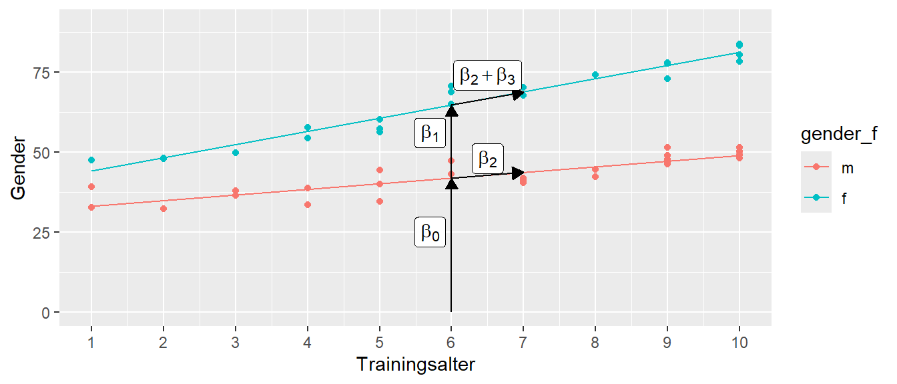

19 Integration von nominalen Variablen
In den bishergen Betrachtungen zur multiplen linearen Regression sind nur kontinuierliche, beziehungsweise metrische Variablen als Prädiktorvariablen verwendet worden. Im Folgenden werden gezeigt, dass mit einem kleinem Trick genauso nominale Variablen, also z.B. TREATMENT versus CONTROL, in das Modell integriert werden können. Dabei wird sich zeigen, dass dadurch im Prinzip keine fundamental neuen Konzept erlernt werden müssen. Die bisherige Betrachtungsweise von Modellparametern als Steigungen von Geraden bzw. Ebenen ist immer noch ausreichend um die Modellparameter interpretieren zu können. Der Einstieg beginnt zunächst mit dem kanonischen Vergleich von zwei unabhängigen Gruppen.
19.1 Vergleich von zwei unabhängigen Gruppen
Es sollen im Folgenden die Unterschiede zwischen Männern und Frauen in Bezug auf die Körpergröße statistisch untersuchen werden. In Abbildung 19.1 ist ein hypothetischer Datensatz von Körpergrößen von Frauen und Männern abgebildet. Der Datensatz ist so konstruiert, dass Männer im Mittel größer als Frauen sind.
In Tabelle 19.1 ist ein Ausschnitt der Daten tabellarisch dargestellt. Die Daten sind unterteilt in zwei Datenspalten. In der ersten Spalte stehen die Körpergrößen, während in der zweiten Spalte die nominale Variable gender steht. Als eine nominale Variable nimmt sie entweder den Wert m für Männer oder f für Frauen an.
| cm | gender |
|---|---|
| 174.4 | m |
| 177.7 | m |
| 195.6 | m |
| 171.3 | f |
| 164.0 | f |
| 176.0 | f |
In Tabelle 19.2 sind die deskriptiven Statistiken der Körpergrößendaten abgebildet. Hier ist zu erkennen, dass die Standardabweichung in etwa die gleiche Größen haben, während die Mittelwerte mit \(\bar{y}_{f} = 169\) bzw. \(\bar{y}_{m} = 180\) entsprechend unterschiedlich sind.
| Gender | \(\bar{x}\) | SD |
|---|---|---|
| f | 168.8 | 8.4 |
| m | 179.5 | 9.8 |
Um die Repräsentation von nominalen Variablen in einem lineare Modell zu verstehen ist allerdings zunächst noch eine kurze Detour notwendig um zu verstehen wie nominale Werte in R repräsewerden.
19.2 Nominale Variablen in R
Nominale Variablen werden in R mittels eines eigenem Datentyps factor repräsentiert. Erstellt werden kann ein Faktor mittels der factor()-Funktion. Die Funktion hat drei wichtige Parameter. Der erste Parameter bezeichnet die Werte, der zweite die möglichen Faktorstufen (levels) und der dritte Parameter die dazugehörigen Bezeichnungen (labels). Ein einfaches Beispiel mit einer nominalen Variablen die die beiden Werte m und f annehmen kann, kann in R wie folgt umgesetzt werden.
gender <- factor(c(0,0,1,1),
levels = c(0,1),
labels = c('m','f'))
gender[1] m m f f
Levels: m fD.h. ein Faktor besteht aus einem Datenvektor mit den Elemente \((0,0,1,1)\). Auf diesem Datenvektor werden die Stufen levels mit \(0\) und \(1\) und definiert und die dazugehörigen labels mit \(m\) und \(f\) definiert. Wenn die neue Variable gender aufgerufen wird, gibt R einen Vektor mit den entsprechenden labels zurück. Zusätzlich gibt R die möglichen labels auch noch einmal explizit als Levels an.
Wenn der Parameter levels nicht angegeben wird, dann extrahiert factor() die eineindeutigen Werte selbst und führt die Abbildung auf die labels entsprechend den Sortierungsregeln von R aus.
gender <- factor(c(0,0,1,1),
labels = c('m','f'))
gender[1] m m f f
Levels: m fstr(gender) Factor w/ 2 levels "m","f": 1 1 2 2Dabei muss darauf geachtet werden, dass die Abbildung auch tatsächlich diejenige ist, die gewünscht ist.
gender <- factor(c(0,0,1,1),
labels = c('f','m'))
gender[1] f f m m
Levels: f mDaher ist es fast immer sinnvoll labels und levels immer zusammen zu spezifizieren. Wenn die Parameter nicht angegeben werden, dann führt factor die Abbildung automatisch durch und für die labels werden die Datenwerte übernommen.
gender <- factor(c(0,0,1,1))
gender[1] 0 0 1 1
Levels: 0 1
Warnung
Achtung, die Variable gender sieht zwar aus wie ein numerischer Vektor, sie ist es aber nicht.
is.numeric(gender)[1] FALSEgender + 1[1] NA NA NA NAIntern wird eine Faktorvariable von R zwar als ein numerischer Vektor abgelegt. Aber die sichtbaren Werte sind nun die Zeichenketten der labels definiert, die daher auch angezeigt werden. Die interne numerische Repräsentation muss auch nicht mehr den ursprünglichen Datenwerten entsprechen.
as.numeric(gender)[1] 1 1 2 2Die Datenwerte waren ursprünglich \((0,1)\) und sind jetzt auf \((1,2)\) abgebildet worden. Dazu sei noch mal an die Eigenschaft von nominalen Variablen erinnert. Nominale Variablen sind voneinander unterscheidbare Werte die jedoch in keiner Reihenfolge zueinander stehen.
Die automatische Konvertierung von factor() funktioniert am intuitivsten mit Zeichenkettenvektoren.
gender <- factor(c('m','f','m','f'))
gender[1] m f m f
Levels: f mstr(gender) Factor w/ 2 levels "f","m": 2 1 2 1factor() ermittelt zunächst die eineindeutigen Werte und sortiert diese dann entsprechend des Typen. In diesem Fall wird die Zeichenkette alphabetisch sortiert. Dann erfolgt die Abbildung der Werte auf die labels. Dies führt in diesem Fall dazu, dass die Werte m intern den Wert \(2\) zugeordnet bekommen, obwohl der erste Wert in den Daten m ist. Diese Sortierung der Daten wird später noch einmal von Bedeutung werden.
Die Reihenfolge der Faktorstufen wird durch die Angabe des levels explizit bestimmt werden und ist daher auch noch mal ein Argument dafür das levels-Argument zu verwenden.
gender <- factor(c('m','f','m','f'),
levels = c('m','f'))
gender[1] m f m f
Levels: m fstr(gender) Factor w/ 2 levels "m","f": 1 2 1 2gender <- factor(c('m','f','m','f'),
levels = c('f','m'))
gender[1] m f m f
Levels: f mstr(gender) Factor w/ 2 levels "f","m": 2 1 2 1
Tipp
Im Package forcats sind eine Reihe von Funktionen hinterlegt, mit denen die Eigenschaften von factor-Variablen einfach manipuliert werden können. Zum Beispiel, wenn die Reihenfolge von Faktorstufen geändert werden soll kann die Funktion fct_relevel() verwendet.
[1] m f m f
Levels: f m[1] m f m f
Levels: m fWie immer ist die ausführliche Dokumentation der Funktionen mit Beispiel die erste Addresse, wenn Probleme im Zusammenhang mit factor-Variablen auftauchen.
Tipp
Viele Funktionen in R, wie z.B. lm(), transformieren Vektoren mit Zeichenketten automatisch in einen factor() um. Wird in lm() in der Formel beispielsweise y ~ gender benutzt und gender ist eine Datenspalte die aus den Zeichenketten c('m','m','f','f') besteht, dann ruft lm() intern die Funktion factor() für diese Daten auf und führt dann die Berechnung mit der resultierenden Faktorvariable durch.
Dies erleichtert natürlich oft den Umgang mit den Daten, hat aber den Nachteil das immer klar sein muss, dass die automatische Konvertierung auch tatsächlich diejenige ist, dich gewünscht ist.
19.3 Vergleich von zwei Gruppen (continued)
Zurück zum Körpergrößenvergleich. Normalerweise würden die Unterschiede zwischen den beiden Gruppen mit einem klassischen t-Test für unabhängige Stichproben unter der Annahme der Varianzgleichheit untersucht werden. In R kann dazu die t.test()-Funktion verwendet werden.
t.test(cm ~ gender, data=height, var.equal=T)
Two Sample t-test
data: cm by gender
t = -4.5683, df = 58, p-value = 2.617e-05
alternative hypothesis: true difference in means between group f and group m is not equal to 0
95 percent confidence interval:
-15.45403 -6.03713
sample estimates:
mean in group f mean in group m
168.7834 179.5290 Dem Output von t.test() zeigt an, dass der Unterschied zwischen den Gruppen statistisch Signifikant ist.
Der Anwendung des t-Tests unterliegt, wie bei allen statistischen Tests, ein Modell. Bei gleich großen Gruppen \((n_w = n_m)\) folgt die übliche Formulierung.
\[\begin{equation} \begin{aligned} Y_{if} &= \mu_{f} + \epsilon_{if}, \quad \epsilon_{if} \sim \mathcal{N}(0,\sigma^2) \\ Y_{im} &= \mu_{m} + \epsilon_{im}, \quad \epsilon_{im} \sim \mathcal{N}(0,\sigma^2) \end{aligned} \label{eq-mlm-dummy-tTest-model} \end{equation}\]
Dem Modell folgend, sollten beide Gruppen normalverteilt sein mit gleicher Varianz \(\sigma^2\) und den Erwartungswerten \(\mu_f\) für die weiblichen Teilnehmerinnen und \(\mu_m\) für die männlichen Teilnehmer. Die Hypothesen beim t-Test sind unter der Nullhypothese die übliche Annahme der Gleichheit der Mittelwerte.
\[\begin{equation*} H_0: \delta = 0 \end{equation*}\]
Daraus resultiert die folgende Teststatistik:
\[\begin{equation} t = \frac{\bar{y}_m - \bar{y}_w}{\sqrt{\frac{s_m^2 + s_w^2}{2}}\sqrt{\frac{2}{n}}} \label{eq-tTest} \end{equation}\]
Unter der \(H_0\) folgt die Referenz- bzw. Stichprobenverteilung einer t-Verteilung mit \(N - 2\) Freiheitsgraden.
\[\begin{equation*} t|H_0 \sim t_{df=2n-2} \end{equation*}\]
Die entsprechende Dichtefunktion hat die folgende graphische Darstellung (siehe Abbildung 19.2).
Soweit nicht Neues. Im Beispiel wurde ein \(t\)-Wert von \(t = -4.6\) beobachtet der derart extrem ist, dass er in Abbildung 19.2 schon gar nicht mehr dargestellt wird. Im Folgenden soll nun gezeigt werden, das das gleiche Ergebnis mittels eines linearen Modellansatzes berechnet werden.
Das bekannte lineares Modell hat im einfachsten Fall die folgende Form für eine einfache Regression:
\[\begin{equation} y_i = \beta_0 + \beta_1 \cdot x_i + \epsilon_i \label{eq-mlm-dummy-lm} \end{equation}\]
Die Frage ist nun, ob dieses Modell auf die Formeln \(\eqref{eq-mlm-dummy-tTest-model}\) und \(\eqref{eq-tTest}\) abgebildet werden kann?
Tatsächlich gibt es eine relativ einfache Möglichkeit mittels eines Ansatzes mit sogenannten Indikatorvariablen (oft auch als Dummyvariablen bezeichnet). Die \(Y\)-Variable, die abhängige Variable ist die gleiche wie beim t-Test. Im Beispiel also die Körpergrößen. Daher bleibt für die \(X\)-Variable nur noch die unabhängige Variable, in dem Beispiel entsprechend die gender-Variable. Jetzt entsteht allerdings das Problem, dass \(x_i\) nur zwei verschiedene Werte annehmen kann. Diese sind im Beispiel entweder m oder f . Offensichtlich macht die folgende Formulierung wenig Sinn, da der Steigungskoeffizient \(\beta_1\) nicht mit einem Wert m multipliziert werden kann.
\[\begin{equation*} y_i = \beta_0 + \beta_1 \cdot m + \epsilon_i \end{equation*}\]
Die Lösung besteht nun darin \(X_i\), also im Beispiel m, in eine Indikatorvariable umzuwandeln. Eine Indikatorvariable kann nur zwei verschiedene numerische Werte einnehmen. Entweder den Wert \(0\) oder den Wert \(1\) (es gibt auch noch andere Systeme, aber diese seien im Weiteren ignoriert). Dies führt zur folgenden Formel.
\[\begin{align*} y_i &= \beta_0 + \beta_1 \cdot 0 + \epsilon_i \quad \text{oder} \\ y_i &= \beta_0 + \beta_1 \cdot 1 + \epsilon_i \quad \end{align*}\]
Diese Formulierung ist nun wieder sinnvoll, da \(\beta_1\) mit einem numerischen Wert multipliziert wird. Nun wird noch eine Abbildung von den Werten m und f auf die Werte \(0\) und \(1\) benötigt, um die Gruppenzugehörigkeit zu kodieren. Dazu wird eine sogenannte Referenzstufe festgelegt. Der Referenzstufe wird der Wert \(x_i = 0\) zugewiesen. Im Beispiel sei die Referenzstufe die weibliche Gruppe. Dies führt zu der folgenden Vorschrift:
Wenn der Wert \(y_i\) aus der Gruppe weiblich (
Wenn der Wert \(y_i\) aus der Gruppe männlich (
f) kommt, dann wird \(x_i = 0\) gesetztWenn der Wert \(y_i\) aus der Gruppe männlich (
m) kommt, dann wird \(x_i = 1\) gesetzt.Formal:
\[\begin{equation*} x_i = \begin{cases} 0\text{ wenn weiblich}\\ 1\text{ wenn männlich} \end{cases} \end{equation*}\]
Was jetzt noch fehlt, ist eine sinnvolle Belegung des \(Y\)-Achsenabschnittes \(\beta_0\) und des Steigungskoeffizienten \(\beta_1\) in Formel \(\eqref{eq-mlm-dummy-lm}\) im Zusammenhang mit dem Indikatorvariablenansatz. In der weiblichen Gruppe mit \(x_i = 0\) folgt für \(\eqref{eq-mlm-dummy-lm}\):
\[\begin{equation*} y_i = \beta_0 + \beta_1 \cdot x_i + \epsilon_i = \beta_0 + \beta_1 \cdot 0 = \beta_0 + \epsilon \end{equation*}\]
Daraus folgt, dass für alle \(Y\)-Werte aus der Referenzgruppe, im Beispiel aus der Gruppe f, anhand des Modells der gleiche Wert \(\hat{y}_i\) vorhergesagt wird. Formal:
\[\begin{equation*} \hat{y}_{f} = \beta_0 \end{equation*}\]
Bezogen auf die übliche Interpretation von \(\beta_0\) als der \(Y\)-Achsenabschnitt beschreibt der \(Y\)-Achsenabschnitt den Vorhersagewert \(\hat{y}_i\) für all Werte aus der Referenzstufe. Die Frage ist nun welcher Wert \(\hat{y}_{f}\) wird vorhergesagt? Es lässt sich zeigen (siehe unten), dass \(\beta_0\) den Mittelwert der Referenzgruppe annimmt. Rein inituitiv macht das auch Sinn. Bei der linearen Regression werden die Modellkoeffizienten so gewählt, dass die Quadrate der Abweichungen, die Residuen, von der Geraden (Ebene) minimiert werden. In diesem Fall kommen alle Werte aus der Referenzgruppe, die durch die Wahl der Indikatorvariable (\(=0\)) genau auf der \(Y\)-Achse liegen. Derjenige Wert der die Abweichungen minimiert ist der Mittelwert \(\bar{y}_{f}\) der Gruppe. Wenn nun noch die Annahmen der linearen Regression bezüglich der Residuen dazu genommen werden, folgt:
\[\begin{equation*} \hat{y}_{f} = \beta_0 + \epsilon_i, \quad \epsilon \sim \mathcal{N}(0,\sigma) \end{equation*}\]
Diese Formulierung ist genau gleich derjenigen die im t-Test-Ansatz verwendet wurde (siehe \(\eqref{eq-mlm-dummy-tTest-model}\)). Formal wird also der Mittelwert \(\mu_f\) mit dem \(Y\)-Achsenabschnitt \(\beta_0\) identifiziert:
\[\begin{equation*} \beta_0 = \mu_f \end{equation*}\]
Da die Indikatorvariable \(X_i\) für Werte aus der Gruppe f den Wert \(0\) zugewiesen bekommt, wird für \(Y\)-Werte aus der Gruppe m entsprechend der Indikatorwert \(1\) zugewiesen. Formal führt dies also zu:
\[\begin{equation*} Y_i = \beta_0 + \beta_1 X_i = \beta_0 + \beta_1 \cdot 1 = \beta_0 + \beta_1 \end{equation*}\]
D.h. der vorhergesagte Wert \(\hat{y}_i\) ist wieder nur eine Konstante für alle Werte von \(i\), die sich jetzt aber aus beiden Modellparametern \(\beta_0\) und \(\beta_1\) zusammensetzt. Mit der gleichen Argumentation wie oben, ist der Wert der unter der Randbedingung des Minimums der mittleren, quadrierten Abweichungen der Mittelwert der Werte aus der Gruppe m. Daraus folgt, zusammen mit der Festsetzung von eben \(\beta_0 = \bar{y}_{f}\):
\[\begin{align*} \bar{y}_{m} &= \beta_0 + \beta_1 = \bar{y}_{f} + \beta_1 \\ \Leftrightarrow \beta_1 &= \bar{y}_{m} - \bar{y}_{f} \end{align*}\]
Daraus folgt, dass der Modellparameter \(\beta_1\), der Steigungskoeffizient, den Unterschied der Mittelwerten \(\Delta = \bar{y}_{m} - \bar{y}_{f}\) zwischen den beiden Gruppen modelliert.
Insgesamt resultieren daraus die folgenden Zusammenhänge wenn noch die Annnahme der normalverteilten Residuen \(\epsilon_i \sim \mathcal{N}(0,\sigma)\) dazugenommen werden.
\[\begin{align*} y_i &= \beta_0 + \beta_1 \cdot 0 + \epsilon_i = \mu_f + \Delta \cdot 0 + \epsilon_i = \mu_f + \epsilon_i \\ y_i &= \beta_0 + \beta_1 \cdot 1 + \epsilon_i = \mu_f + \Delta \cdot 1 + \epsilon_i = \mu_f + (\mu_m - \mu_f) + \epsilon_i = \mu_m + \epsilon_i \end{align*}\]
Insgesamt zeigt dies, dass mittels der Indikatorvariablen eine Abbildung des einfachen linearen Regressionsmodells auf den t-Test (Formel \(\eqref{eq-mlm-dummy-tTest-model}\)) möglich ist. Der t-Test ist kann daher als Spezialfall der einfachen Regression bzw. des einfachen linearen Modells betrachtet werden.
Die Voraussetzungen im t-Test der Normalverteilung der Werte, bedeutet hierbei letztendlich nichts anderes, als die Normalverteilung der Residuen im Regressionsmodell. Die Voraussetzung der Varianzgleichheit ist dabei nichts anderes als die Homoskedastizität im linearen Modell.
Um den Ansatz einmal konkret zu machen, sei zum Beispiel den ersten Wert aus Tabelle 19.1 \(y_{1m} = 174.4\) in seine Komponenten aufgeteilt. Es folgt \(\Delta = 179.53 - 168.78 = 10.75, e_{1m} = 174.4 - 179.53= -5.13\) und \(x_{1m} = 1\).
\[\begin{align*} y_{1m} = 174.4 &= \mu_f + \Delta \cdot x_{1m} + e_{1m} \\ &= 168.78 + 10.74 \cdot 1 - 5.13 \end{align*}\]
Das Gleiche für den ersten weiblichen Wert in Tabelle 19.1 \(y_{1f} = 171.3, \Delta = 10.75, e_{1f} = 171.3 - 168.78 = 2.52\) und \(x_{1f} = 0\).
\[\begin{align*} y_{1f} = 171.3 &= \mu_f + \Delta \cdot x_{1f} + e_{1f} \\ &= 168.78 + 10.74 \cdot 0 + 2.52 \end{align*}\]
Zusammenfassend, mit Hilfe von Indikatorvariable ist eine Möglichkeit gefunden worden, mit der das t-Test Modell auf das lineare Modell abgebildet werden kann.
In Abbildung 19.3 ist die Regressionsgerade für das Modell zusammen mit den Rohdaten mittels der Indikatorvariablen abgetragen.
In Abbildung 19.3 ist zu erkennen, wie der Steigungskoeffizient \(\beta_0\) tatsächlich als eine Steigung zu interpretieren ist. Da die beiden Gruppen um eine \(X\)-Einheit von \(1\) voneinander entfernt liegen, ist der Unterschied zwischen den beiden Gruppenmittelwerten genau die Steigung der Gerade.
19.3.1 Verwendung von Indikatorvariablen in lm()
In lm() kann eine nominale Variable genauso wie die bisherigen kontinuierlichen Variablen verwendet werden.
mod <- lm(cm ~ gender, height)| \(\hat{\beta}\) | \(s_e\) | t | p | |
|---|---|---|---|---|
| (Intercept) | 168.783 | 1.663 | 101.477 | <0.001 |
| genderm | 10.746 | 2.352 | 4.568 | <0.001 |
lm() gibt die Faktorstufe nach dem Namen der Faktorvariable an. Im Beispiel steht genderm für Stufe m aus dem Faktor gender. Der Wert für \(\hat{\beta}_0\) entspricht genau demjenigen in Tabelle 19.2. Weiterhin, der Wert für den t-Wert für \(\beta_1 = \Delta\), ist zu beobachten, dass der Wert exakt mit t-Wert übereinstimmt, der mittels des t-Test berechnet wurde . Lediglich das Vorzeichen ist in der anderen Richtung was aber nur damit zusammenhängt welcher Gruppenmittelwert von dem anderen Gruppenmittelwert subtrahiert wird.
Sei nun noch das Konfidenzintervall für den Steigungskoeffizienten \(\beta_1\) betrachtet:
confint(mod) 2.5 % 97.5 %
(Intercept) 165.45401 172.11276
genderm 6.03713 15.45403Wieder stimmt, bis auf das Vorzeichen, das Konfidenzintervall exakt mit demjenigen des t-Test überein.
Damit lässt sich auf Basis der vorhergehenden Ausführung auch direkt nachvollziehen wie lm() intern mit nominalen Variablen umgeht. Bei der Modellevaluierung erkennt lm() gender als nominale Variable und ersetzt es durch eine Indiktaorvariable (siehe Tabelle 19.3).
| cm | gender | \(x_1\) |
|---|---|---|
| 174.40 | m | 1 |
| 177.70 | m | 1 |
| 195.59 | m | 1 |
| 160.05 | f | 0 |
| 164.92 | f | 0 |
| 154.35 | f | 0 |
lm() ersetzt gender durch die Indikatorvariable, also durch Zahlenwerte, und dann kann einfach wieder die bekannte Maschinerie des linearen Modell angeworfen werden. Als letzten Schritt nun noch eine Betrachtung des resultierenden Residuenplots (siehe Abbildung 19.4).

Der Plot sieht etwas speziell aus, da die Residuen nur für zwei vorhergesagte Werte \(\hat{y}_i\) angezeigt werden. Diese spezielle Form, ist letztendlich ein Ergebnis dessen, dass nur zwei verschiedene \(\hat{y}\)-Werte vorhergesagt werden.
19.4 Dummyvariablen bei mehr als zwei Faktorstufen
Nachdem ein Beispiel mit zwei Faktorstufen durchgegangen, stellt sich die Frage ob dieser Ansatz auch für mehr als zwei Faktorstufen einer nominalen Variablen möglich ist? Sei dazu, zunächst ein einfaches synthetisches Beispiel betrachtet (siehe Abbildung 19.5)
Es wurde ein Datensatz ähnlich einem Reaktionszeitexperiment erstellt, bei dem Probanden unter vier verschiedenen Konditionen \(A,B,C\) und \(D\) beobachtet wurden. Die deskriptive Daten sind Tabelle 19.4 einsehbar. Der Einfachheit halber sind die Daten so generiert, dass die Gruppenmittelwert von \(A\) nach \(D\) immer größer werden.
| Gruppe | \(\bar{y}_j\) | \(s_j\) | \(\Delta_{j-A}\) |
|---|---|---|---|
| A | 509.53 | 45.66 | |
| B | 599.68 | 43.57 | 90.15 |
| C | 706.94 | 40.49 | 197.41 |
| D | 805.09 | 52.51 | 295.56 |
Die letzten Spalte zeigt die Abweichungen der Gruppenmittelwerte der Gruppen \(B,C,D\) von der Gruppe \(A\) an. Das sollte jetzt auch schon direkt eine Möglichkeit aufzeigen, wie diese Daten in ein lineares Modell überführt werden können. Dazu wird wiederum eine Referenzgruppe festgelegt, z.B. Gruppe \(A\). Anstatt nun nur ein einzelnes \(Delta\) zu berechnen, werden drei \(\Delta\)s eingeführt. Die \(\Delta\)s repräsentieren dabei jeweils die Abweichungen der spezifischen Faktorstufen von der Referenzstufe. Für jedes dieser \(\Delta_i\)s wird nun eine Indikatorvariable \(x_{ij}\) eingeführt. Die Indikatorvariable indiziert jeweils über die \(0\) und \(1\) die Zugehörig des \(Y_i\) Wertes zu der Gruppe. Ein lineares Modell lässt nun wie folgt formulieren:
\[\begin{equation*} y_i = \mu_A + \Delta_{B-A} x_{1i} + \Delta_{C-A} x_{2i} + \Delta_{D-A} x_{3i} + \epsilon_i \end{equation*}\]
Für die Abweichungen von der Referenzgruppe sind drei Indikatorvarialben \(x_{1i}, x_{2i}\) und \(x_{3i}\) eingeführt worden. Die Modellkoeffizienten bilden somit jeweils die Abweichungen der Mittelwerte von Gruppe \(A\) ab. Dies führt dann zu der folgenden Kodierung der Daten (siehe Tabelle 19.5).
| x1 | x2 | x3 | |
|---|---|---|---|
| A | 0 | 0 | 0 |
| B | 1 | 0 | 0 |
| C | 0 | 1 | 0 |
| D | 0 | 0 | 1 |
Wenn ein Wert \(Y_i\) aus Gruppe \(A\), der Referenzgruppe, kommt, dann werden die dire Indikatorvariablen \(X_{1i}, X_{2i}, X_{3i}\) mit den Werten \((0,0,0)\) belegt. Wenn ein Wert \(Y_i\) aus Gruppe \(B\) kommt, dann mit \((1,0,0)\) belegt usw..
Dieser Ansatz lässt sich wie folgt Verallgemeinern (siehe Tabelle 19.6).
| \(x_1\) | \(x_2\) | \(\ldots\) | \(x_{K-1}\) | |
|---|---|---|---|---|
| Referenz (\(j=1\)) | 0 | 0 | 0 | |
| \(j=2\) | 1 | 0 | \(\ldots\) | 0 |
| \(j=3\) | 0 | 1 | \(\ldots\) | 0 |
| \(j=K\) | 0 | 0 | \(\ldots\) | 1 |
Bei Integration einer nominalen Variable mit \(K\) Faktorstufen werden \(K-1\) Indikatorvariablen \(X_1, X_2, \ldots, X_{K-1}\) benötigt. Eine der Faktorstufen wird als Referenzstufe definiert. Die Indikatorvariablen \(X_1\) bis \(X_{K-1}\) kodieren dann die Abweichungen der anderen Stufen von der Referenzstufe. Diese Art der Kodierung wird in der Literatur auch als treatment Kodierung bezeichnet. Die Indikatorvariablen werden oft auch als Dummyvariablen bezeichnet
Definition 19.1 (Indikator-/Dummyvariablen ) Eine Dummyvariable, auch Indikatorvariable genannt, ist eine binäre Prädiktorvariable die nur die Werte \(0\) oder \(1\) annimmt. Mit einer Dummyvariable kann die An- bzw. Abwesenheit eines kategorialen Effekts modelliert werden.
Das lineare Modell in unserem Reaktionszeitexperiment ergibt den folgenden Modellfit (siehe Tabelle 19.7).
mod <- lm(rt ~ group, data)| \(\hat{\beta}\) | \(s_e\) | t | p | |
|---|---|---|---|---|
| (Intercept) | 509.526 | 10.235 | 49.784 | <0.001 |
| groupB | 90.150 | 14.474 | 6.228 | <0.001 |
| groupC | 197.414 | 14.474 | 13.639 | <0.001 |
| groupD | 295.561 | 14.474 | 20.420 | <0.001 |
Als Steigungskoeffizienten werden genau die Abweichungen der Mittelwerte der jeweiligen Faktorstufen von der Referenzstufe erhalten (siehe Tabelle 19.5). Zusammenfassend ermöglicht somit die Verwendung der Indikatorvarialben die Möglichkeit eine nominale Variable mit beliebig vielen Faktorstufen in einem linearen Modell abzubilden. Damit ist dann auch die Unterscheidung in ANOVA und linear Regression als überfällig anzusehen, da beide letztendlich auf dem gleichem Modell, nämlich dem linearen Modell, beruhen.
Es folgt wieder eine kurze Betrachtung des Residuenplots (siehe Abbildung 19.6).

Es ist wieder zu sehen, dass nur vier verschiedene \(\hat{y}_i\) Werte vorhergesagt werden, nämlich die Mittelwerte \(\bar{y}_k\) in den jeweiligen \(K\) Gruppen. Die Residuen \(e_i\) streuen daher nur um diese vorhergesagten Werte.
In R kann die Dummy-Kodierung explizit mittels der dummy.coef()-Funktion erhalten werden.
dummy.coef(mod)Full coefficients are
(Intercept): 509.5262
group: A B C D
0.00000 90.15023 197.41364 295.5606519.5 Kombination von kontinuierlichen und nominalen Prädiktorvariablen
Da durch die Verwendung von Indikatorvariablen die Unterscheidung zwischen nominalen und kontinuierlichen Variablen in der Modellierung aufgehoben wird, können beide Typen von Variablen in einem Modell integriert werden. In Abbildung 19.7 ist ein hypothetischen Zusammenhang zwischen der körperlichen Leistung dem Trainingsalter und dem Gender abgetragen.

Das Trainingsalter (ta) geht wie bisher als kontinuierliche Variable in das Modell ein, während gender als nominale Variable über eine Dummyvariable modelliert wird. Weibliche Teilnehmerinnen der Studie werden als Referenzstufe festgelegt. Das resultiert dann in dem folgenden linearen Modell:
\[\begin{align*} Y_i &= \beta_{ta = 0,x_{1i}=0} + \Delta_m \times x_{1i} + \beta_{ta} \times ta + \epsilon_i \\ x_1 &= \begin{cases} 0\text{ wenn weiblich}\\ 1\text{ wenn männlich} \end{cases} \\ \end{align*}\]
Modellieren mit lm() führt dann zu:
mod <- lm(perf ~ gender_f + ta, lew)| term | estimate | std.error | statistic | p.value |
|---|---|---|---|---|
| (Intercept) | 41.181 | 1.083 | 38.024 | 0 |
| gender_fm | -10.877 | 0.805 | -13.503 | 0 |
| ta | 1.927 | 0.145 | 13.261 | 0 |
Die Variable gender ist durch lm() als Dummyvariable definiert worden und der Steigungskoeffizient \(\beta_1=\) gender_fm kodiert den mittleren Unterschied zwischen männlichen und weiblichen Studienteilnehmerinnen. Der \(Y\)-Achsenabschnitt kodiert daher die Leistung von weiblichen Teilnehmerinnen mit einem Trainingsalter von ta\(= 0\). (Warum?). Der Graph der Datenpunkte zusammen mit den resultierenden Modellgraphen der vorhergesagten \(\hat{y}_i\) zeigt an wie das Modell die Daten modelliert (siehe Abbildung 19.8).

Es wurden zwei Geraden modelliert. Eine Gerade für die weiblichen und eine für die männlichen Teilnehmer. Die Geraden sind parallel zueinander und um den Wert von \(\beta_1\) gegeneinander verschoben.
Natürlich ist es auch nun möglich mit dem Indikatorvariablenansatz auch eine Interaktion zwischen kontinuierlichen und nominalen Variablen zu modellieren. Wenn die Daten zum Beispiel dem Trend in Abbildung 19.9 folgen würden.
Hier ist zu sehen, dass die Zunahme der Leistung mit dem Trainingsalter nicht gleich ist in beiden gender Gruppen. Bei den männlichen Teilnehmern ist der Zuwachs mit dem Trainingsalter größer. D.h der Einfluss der Prädiktorvariable Trainingsalter hängt mit der Ausprägung der Prädiktorvariablen gender zusammen. Es liegt ein Interaktionseffekt vor. Übertragen auf ein lineares Modell könnte der Modellansatz wie folgt aussehen:
\[\begin{equation*} y_i = \beta_{ta=0,x_{1i}=0} + \Delta_m \times x_{1i} + \beta_{ta} \times ta + \beta_{ta \times gender} \times x_{1i} \times ta + \epsilon_i \end{equation*}\]
In lm() ausgedrückt:
mod <- lm(perf ~ gender_f * ta, lew)| term | estimate | std.error | statistic | p.value |
|---|---|---|---|---|
| (Intercept) | 31.354 | 1.370 | 22.891 | 0 |
| gender_ff | 8.575 | 2.010 | 4.266 | 0 |
| ta | 1.763 | 0.195 | 9.043 | 0 |
| gender_ff:ta | 2.362 | 0.290 | 8.139 | 0 |
Die gefitteten Regressionsgeraden nehmen dann die folgende Form an (siehe Abbildung 19.10).
Zunächst sollen Modellkoeffizienten mit Hilfe des Graphen interpretiert werden. Dazu wird die Prädiktorvariable für das Alters ta um den Wert \(\bar{ta} = 6\) zentriert und die Modellanpassung erfolgt mittels der zentrierten Variable.
lew <- lew |> mutate(ta_c = ta - ta_cen)
mod_c <- lm(perf ~ gender_f * ta_c, lew)In Tabelle 19.10 sind die neuen Koeffizienten zu sehen. Sie unterscheiden sich nur für \(\beta_0\) und \(\beta_1\) zu den Koeffizienten von Tabelle 19.9 (Warum?).
ta_c) und Gender.
| coef | term | estimate |
|---|---|---|
| \(\beta_0\) | (Intercept) | 41.934 |
| \(\beta_1\) | gender_ff | 22.750 |
| \(\beta_2\) | ta_c | 1.763 |
| \(\beta_3\) | gender_ff:ta_c | 2.362 |
Wie sind die Modellkoeffizienten zu interpretieren? Die Referenzgruppe sind die Datenpunkte der männlichen Gruppe. Daher ist der \(Y\)-Achsenabschnitt \(\beta_0 = 41.93\) die Performance einer durchschnittlichen, männlichen Versuchsperson mit einem Trainingsalter von ta\(= 6\). Der zweite Koeffizient \(\beta_1 = 22.75\) kodiert hier den Unterschied zwischen einer männlichen und einer weiblichen Versuchsperson jeweils mit einem Trainingsalter von ta\(=6\). Der Steigungskoeffizient \(\beta_2 = 1.76\) dagegen, kodiert den Unterschied zwischen zwei männlichen Versuchspersonen, die sich um ein Trainingsjahr ta voneinander unterscheiden. Der letzte Koeffizient \(\beta_3 = 2.36\), der Interaktionskoeffizient kodiert nun den Unterschied in den Steigungen zwischen den männlichen und den weiblichen Versuchspersonen. Um den Unterschied zwischen zwei weiblichen Versuchsperson zu erhalten, die sich um ein Trainingsjahr ta voneinander Unterscheiden, müssen daher \(\beta_2\) und \(\beta_3\) miteinander addiert werden \(4.12\).

In Abbildung 19.11 sind die einzelnen Modellkoeffizienten aus Tabelle 19.9 in der Grafik miteingefügt. Die Interpretation der Werte sollte damit klarer werden.
19.6 Verschiedene Kodierschemas für die Dummy-Variablen.
In der Herleitung der Integration von nominalen Faktoren in die multiple Regression ist bisher ein bestimmtes Schema verwendet worden, wie die einzelnen Faktorstufen auf \(X\)-Variablen abgebildet werden. Dazu wurde eine Referenzstufe bestimmt, welche durch den \(Y\)-Achsenabschnitt im Modell modelliert wird und die anderen \(\beta_i\)-Koeffizienten bilden jeweils die Abweichungen der Faktorstufenmittelwerten von dieser Referenzstufe ab.
Wenn die \(\beta_i\)-Koeffizienten in einem Vektor \(\boldsymbol{\beta}\) zusammengefasst.
\[\begin{equation*} \boldsymbol{\beta} = (\beta_0, \beta_1, \ldots, \beta_K)^T \end{equation*}\]
und die Mittelwerte \(\mu_i\) der Faktorstufen \(i = 1,2,\ldots,K\) in einem Vektor \(\boldsymbol{\mu}\)
\[\begin{equation*} \boldsymbol{\mu} = (\mu_1, \mu_2, \ldots, \mu_K)^T \end{equation*}\]
Dann können die \(\beta\)-Koeffizienten im Sinne der Mittelwerte der Faktorstufen als eine Abbildung von \(\boldsymbol{\beta} \rightarrow \boldsymbol{\mu}\) aufgefasst werden. Diese Abbildung kann daher auch mit ein Symbol, beispielsweise \(\boldsymbol{B}\), abgebildet werden.
\[\begin{equation*} \boldsymbol{\mu} = \boldsymbol{B\beta} \end{equation*}\]
Tipp
Wenn ihr euch mit Matrizen auskennt, dann werdet ihr gemerkt haben, dass es hier um Grunde um eine lineare Abbildungen handelt. Wenn euch das nichts sagt, dann einfach weiterlesen.
19.6.1 Treatment-Kodierung
Die Abbildung mit einer Referenzstufe und Abweichungen von dieser Stufe, wird als treatment coding bezeichnet. In R kann diese Kodierung mit Hilfe der Funktion contr.treatment() erstellt werden, bzw. ist standardmäßig bei R für nominale Variablen eingestellt.
Sei eine Faktorvariable \(A\) hat drei Stufen \(K = 3, A, B, C\) gegeben. Mit der Funktion mean_contrasts() aus dem package codingMatrices können die Abbildung dargestellt werden (Im Code werden noch die Zeilen- und Spaltenbeschriftungen geändert um den Output leichter interpretieren zu können).
f_A <- c("A","B","C")
beta_to_mu <- mean_contrasts(contr.treatment(f_A))
dimnames(beta_to_mu)[[1]] <- paste0("beta_",0:2)
dimnames(beta_to_mu)[[2]] <- paste0("mu_",f_A)
beta_to_mu mu_A mu_B mu_C
beta_0 1 . .
beta_1 -1 1 .
beta_2 -1 . 1 Im Ausdruck bezeichnen die Zeilen die \(\beta\)-Koeffizienten im multiplen Regressionsmodell, während die Spalten die Mittelwerte \(\mu_i\) der Faktorstufen \(A,B\) und \(C\) spezifizieren. Die Punkte . stehen für den Wert \(0\). Es ist zu sehen, dass in der ersten Zeile für \(\beta_0\) eine \(1\) unter \(\mu_1\) eingetragen ist, während unter \(\mu_2\) und \(\mu_3\) jeweils eine \(0\) eingetragen sind. D.h., der Koeffizient \(\beta_0\) repräsentiert den Mittelwert der Faktorstufe \(A\), der Referenzstufe. In der zweiten Zeile für \(\beta_1\) dagegen, steht unter dem Mittelwert \(\mu_A\) eine \(-1\), unter \(\mu_B\) eine 1 und unter \(\mu_C\) eine \(0\). D.h., wie schon bekannt, der Koeffizient \(\beta_1\) repräsentiert den Unterschied zwischen den Mittelwerten \(\mu_A\) und \(\mu_B\) der dazugehörenden Faktorstufen \(A\) und \(B\). Das gleiche gilt für die dritte Zeile für \(\beta_2\) für den Unterschied \(\mu_C - \mu_A\). Insgesamt, ist hier direkt die Kodierung der Faktorstufen wie sie oben hergeleitet wurde zu erkennen. Die Kodierung ist auch in der dazugehörenden Modellmatrix zu sehen welche die Funktion contr.treatment() verwendet.
set.seed(1)
height_4 <- height |> sample_n(4)
model.matrix(~gender, height_4) (Intercept) genderm
1 1 0
2 1 1
3 1 0
4 1 1
attr(,"assign")
[1] 0 1
attr(,"contrasts")
attr(,"contrasts")$gender
[1] "contr.treatment"19.6.2 Sum-to-zero Kodierung
Die Treatmentkodierung ist nicht die einzig mögliche Kodierung, sondern es geht noch zahlreiche andere bzw. es können auch eigene Abbildungen definiert werden. Ein weiteres Kodierungsschema ist die Abweichungskodierung (engl. deviation) welche auch als sum-to-zero Kodierung bezeichnet wird. In R kann dieses Schema mit der Funktion contr.sum() erzeugt werden und das resultierende Abbildungsschema sieht wie folgt aus.
beta_to_mu <- mean_contrasts(contr.sum(f_A))
dimnames(beta_to_mu)[[1]] <- paste0("beta_",0:2)
dimnames(beta_to_mu)[[2]] <- paste0("mu_",f_A)
beta_to_mu mu_A mu_B mu_C
beta_0 1/3 1/3 1/3
beta_1 2/3 -1/3 -1/3
beta_2 -1/3 2/3 -1/3Die erste Zeile ist direkt ablesbar. Der Koeffizient \(\beta_0\) stellt den Mittelwert \(\bar{\mu}\) der Stufenmittelwerte dar. Die zweite und dritte Zeile für \(\beta_1\) und \(\beta_2\) sind etwas undurchsichtiger. Die \(\beta_i\)-Koeffizienten repräsentieren jeweils die Abweichung der Stufe \(\mu_i\) vom Gesamtmittelwert \(\bar{\mu}\). Formal:
\[\begin{equation*} \beta_i = \mu_i - \bar{\mu} \quad i = 2,3,\ldots,K \end{equation*}\]
Wie resultiert daraus diese Kodierung? Sei zunächst \(\beta_1\) betrachtet. Dieser Koeffizient kodiert die Abweichung der Gruppe A vom Gesamtmittelwert \(\bar{y}\). D.h.
\[\begin{equation*} \beta_1 = \mu_A - \bar{\mu} \end{equation*}\]
Der Gesamtmittelwert \(\bar{y}\) berechnet sich nach \(\bar{y} = \frac{1}{3}\sum_{i=1}^3\mu_i\). Daraus folgt.
\[\begin{equation*} \begin{aligned} \beta_1 &= \mu_A - \bar{\mu} \\ &= \mu_A - \frac{\sum_{i=1}^3\mu_i}{3} \\ &= \mu_A - \frac{1}{3}\mu_A - \frac{1}{3}\mu_B - \frac{1}{3}\mu_C \\ &= \frac{2}{3}\mu_A - \frac{1}{3}\mu_B - \frac{1}{3}\mu_C \end{aligned} \end{equation*}\]
Es werden die Koeffizienten 2/3 -1/3 -1/3 aus dem Output erhalten. Das gleiche Schema trifft auch für \(\beta_2\) zu, der die Abweichung von Gruppe B zum Gesamtmittelwert \(\bar{y}\) kodiert. Übertragen auf das Schema im Beispiel der Reaktionszeiten ergibt sich.
mu_i <- data |> group_by(group) |> summarize(m = mean(rt))
mu_bar <- mean(data$rt)
mu_i |> add_row(group="mu_bar", m = mu_bar)# A tibble: 5 × 2
group m
<chr> <dbl>
1 A 510.
2 B 600.
3 C 707.
4 D 805.
5 mu_bar 655.Beziehungsweise für die Abweichungen der Mittelwerte \(\mu_i\) vom Gesamtmittelwert \(\bar{\mu}\).
mu_i$m - mu_bar[1] -145.78113 -55.63090 51.63251 149.77952Nun wird eine Modellanpassung mit lm() durchgeführt, wobei contr.sum() anstatt contr.treatment() verwendet werden soll. Dies kann direkt im Aufruf von lm() über den Parameter contrasts spezifiziert werden. Der Parameter erwartet eine Liste mit den Namen der nominalen Variablen zusammen mit der Kodierungsfunktion als Zeichenkette (Es gibt noch weitere Möglichkeiten).
mod_sum <- lm(rt ~ group, data, contrasts = list(group = 'contr.sum'))
coef(mod_sum)(Intercept) group1 group2 group3
655.30733 -145.78113 -55.63090 51.63251 Es ist zu sehen, dass die \(\beta\)-Koeffizienten tatsächlich den Gesamtmittelwert und die Abweichungen der Faktormittelwerte \(\mu_i\) vom Gesamtmittelwert \(\bar{\mu}\) kodieren. Es fehlt allerdings der letzte Abweichungswert. Hier kommt die Eigenschaft dieser Kodierung ins Spiel, die der Kodierung ihren Namen sum-to-zero gegeben hat. Per Konstruktion haben die Abweichungen die Eigenschaft das sie aufsummiert gleich \(0\) ergeben. Beispielweise, seien drei Wert \(1,2,3\) gegeben. Deren Mittelwert ist \(3\) und die Abweichungen der Werte vom Mittelwert sind \(-1,0,1\). Diese Abweichung aufsummiert ergeben den Wert \(0\). Diese Eigenschaft trifft immer zu wenn die Abweichungen vom Mittelwert gebildet werden, dass deren Summe gleich \(0\) ist. Dementsprechend, wie auch bei den Residuen kennengelernt, die Abweichungen von Werten von deren Mittelwert ergeben \(0\). Daher gilt:
\[\begin{equation*} \begin{aligned} & \sum_{i=1}^K \beta_i = 0 \\ \Leftrightarrow & \beta_K = -\sum_{i=1}^{K-1} \end{aligned} \end{equation*}\]
D.h. durch die Summation der Abweichungen und der Invertierung des Vorzeichens kann der letzte Abweichungswert erhalten werden. Übertragen auf das Beispiel:
-sum(coef(mod_sum)[2:4])[1] 149.7795D.h. der letzte Abweichungswert oben aus dem Output wird erhalten. Die Anwendung von contr.sum() wirkt sich entsprechend auf die Konstruktion der Modellmatrix aus. Daher unterscheiden sich die resultierenden Modellmatrizen zwischen der Treatment- und der Summ-to-Zero Kodierung. (Zur besseren Übersicht wird ein verkürzter Datensatzmit data_8 nur \(8\) Einträgen verwendet).
data_8 <- data |> sample_n(8)
model.matrix(~group, data_8) (Intercept) groupB groupC groupD
1 1 1 0 0
2 1 0 1 0
3 1 0 0 0
4 1 0 1 0
5 1 0 1 0
6 1 1 0 0
7 1 0 1 0
8 1 0 0 0
attr(,"assign")
[1] 0 1 1 1
attr(,"contrasts")
attr(,"contrasts")$group
[1] "contr.treatment"model.matrix(~group, data_8, contrasts=list(group='contr.sum')) (Intercept) group1 group2 group3
1 1 0 1 0
2 1 0 0 1
3 1 1 0 0
4 1 0 0 1
5 1 0 0 1
6 1 0 1 0
7 1 0 0 1
8 1 1 0 0
attr(,"assign")
[1] 0 1 1 1
attr(,"contrasts")
attr(,"contrasts")$group
[1] "contr.sum"Bis auf die Spalte (Intercept) unterscheiden sich die Verteilung der \(1\) und \(0\) in den Modellmatrizen entsprechend den Kodierungsschemas.
19.6.3 Differenzkodierung
Abschließend sei noch eine weitere Möglichkeit betachtet um die Faktorstufen zu kodieren, die Differenzkodierung . Bei der Differenzkodierung werden jeweils aufeinanderfolgende Stufen miteinander verglichen. In R kann dieses Kodierungsssystem mittels der Funktion contr.diff() aus dem package codingMatrices erstellen werden. Angewendet auf den Faktor f_A ergibt sich.
beta_to_mu <- mean_contrasts(contr.diff(f_A))
dimnames(beta_to_mu)[[1]] <- paste0("beta_",0:2)
dimnames(beta_to_mu)[[2]] <- paste0("mu_",f_A)
beta_to_mu mu_A mu_B mu_C
beta_0 1 . .
beta_1 -1 1 .
beta_2 . -1 1 Der Koeffizient \(\beta_0\) ist wieder gleich dem Mittelwert aus Gruppe \(A\). Der Koeffiziente \(\beta_1\) kodiert ähnlich wie beim Treatmentkoding den Unterschied zwischen den Mittelwerten der Faktoren \(A\) und \(B\). Im Unterschied zum Treatmentkoding kodiert \(\beta_2\) dagegen den Unterschied zwischen den Mittelwerten der Faktoren \(C\) und \(B\).
Angewendet auf das Reaktionszeitexperiment:
mod_diff <- lm(rt ~ group, data, contrasts = list(group = 'contr.diff'))
coef(mod_diff)(Intercept) groupB-A groupC-B groupD-C
509.52619 90.15023 107.26341 98.14701 Die Koeffizienten entsprechen den aufeinanderfolgenden Unterschieden der Gruppenmittelwerten.
diff(mu_i$m)[1] 90.15023 107.26341 98.14701Entsprechend resultiert wieder eine andere Modellmatrix.
model.matrix(~group, data_8, contrasts = list(group = 'contr.diff')) (Intercept) groupB-A groupC-B groupD-C
1 1 1 0 0
2 1 1 1 0
3 1 0 0 0
4 1 1 1 0
5 1 1 1 0
6 1 1 0 0
7 1 1 1 0
8 1 0 0 0
attr(,"assign")
[1] 0 1 1 1
attr(,"contrasts")
attr(,"contrasts")$group
[1] "contr.diff"19.6.4 Zusammenfassung
Zusammenfassend zeigen diese Beispiele, dass die verschiedenen Kodierungssysteme dazu führen, dass die Bedeutung der Regressionskoeffizienten \(\beta_i\) sich unterscheidet je nachdem welches Kodierungssystem verwendet wird. Daher, um die Werte der Koeffizienten interpretieren zu können, muss bekannt sein, welches Kodierungssystem bei der Analyse verwendet wurde. Leider ist dies nicht die einzige Implikation, sondern die unterschiedlichen Kodierungssysteme führen zu weiteren, subtilen Unterschieden die ganz und gar nicht offensichtlich sind. Vor allem später, bei der Behandlung von faktoriellen, experimentellen Untersuchungsdesigns werden die Details der Kodierungssysteme noch einmal stärker von Relevanz werden. In Bezug auf den allgemeinen Fit des Modells haben die Unterschiedlichen Systeme allerdings keinen Einfluss. Die angepasste Regressionsgerade (Ebene) wird daher durch die Wahl der Kodierungssysteme ebenfalls nicht beeinflusst. Somit sind auch die Residuen \(e_i\) unter allen Kodierungssystemen gleich.
Durch die Wahl von speziellen Kodierungssysteme ist es möglich spezifisch gewollte Vergleiche zwischen Faktorenstufen direkt zu kodieren und dann in Form der Koeffizienten statistisch zu überprüfen. Unter der Treatmentkodierung bilden die Koeffizienten direkt die Unterschiede der Faktorenstufen von der Referenzstufe ab. Daher sagt die statistische Signifikanz der Koeffizienten \(\beta_i, i = 2,3,\ldots,K\) direkt schon etwas über die statistische Signifikanz dieser Stufen von der ersten Stufe aus. Wird zum Beispiel als die Referenzstufe eine Kontrollkondition gewählt und die anderen Stufen bilden unterschiedliche Interventionsstufen ab, dann kann über die Koeffizienten direkt der Unterschied der Interventionsstufen von der Kontrollstufe überprüft werden. Dadurch gibt es eine Überschneidung der Thematik der Kodierungssysteme mit dem der Kontraste bzw. Mehrfachvergleiche. Dies wird später im Kapitel zu Linearen Kontrasten noch einmal betrachtet werden. Dieser kurze Überblick über die Kodierungssysteme basiert hauptsächlich auf Venables (2023). Dies ist auch die primäre Quelle um sich in die Thematik noch einmal tiefer einzulesen.
19.7 Zusammenfassung
In diesem Kapitel wurde gezeigt, dass auch nominale Prädiktorvariablen ohne Probleme in das lineare Modell integrieren können. Dabei können die Variablen rein additiv oder auch als interaktive Effekte eingehen. Damit ist der Prozess um Daten zu modellieren deutlich flexibler geworden. Dabei bleibt aber immer die bekannten Rückführung auf Punkt-Steigungs-Modell erhalten.
19.8 Herleitung der Identität von t-Test und linearen Modell (optional)
Seien beide Gruppen gleich groß (\(n\)) mit \(N = n_m + n_w = 2 \times n\). Der t-Wert für \(\beta_1\) berechnet sich aus \(t = \frac{b_1}{s_b}\) mit:
\[ s_b = \sqrt{\frac{\sum_{i=1}^N (y_i - \bar{y})^2}{N-2}\frac{1}{\sum_{i=1}^N(x_i-\bar{x})^2}} \] Dadurch, das die \(x_i\) entweder gleich \(0\) oder \(1\) sind, ist \(\bar{x}=0.5\) und die Abweichungsquadrate im zweiten Term sind alle gleich \(\frac{1}{4}\).
\[ \sum_{i=1}^N(x_i - \bar{x})^2=\sum_{i=1}^N\left(x_i - \frac{1}{2}\right)^2 = \sum_{i=1}^N\frac{1}{4}=\frac{N}{4}=\frac{2n}{4}=\frac{n}{2} \]
Der ersten Term kann mit etwas Algebra und der Definition für die Stichprobenvarianz \(s^2\) auf die gewünschte Form gebracht werden.
\[ \frac{\sum_{i=1}^N(y_i-\hat{y})^2}{N-2}=\frac{\sum_{i=1}^n(\overbrace{y_{im} - \bar{y}_m}^{Männer})^2+\sum_{i=1}^n(\overbrace{y_{iw}-\bar{y}_w}^{Frauen})^2}{2(n-1)}=\frac{(n-1)s_m^2+(n-1)s_w^2}{2(n-1)}=\frac{s_m^2+s_w^2}{2} \]
Die Herleitung für \(\beta_1 = \Delta = \mu_w - \mu_m\) ist ebenfalls relativ geradlinig wenn wir uns an den Zusammenhang zwischen \(\beta_1\) und der Kovarianz zwischen \(x\) und \(y\) erinnern. Mit \(s_x^2 = \frac{N\frac{1}{4}}{N-1} = \frac{N}{4(N-1)}\) folgt:
\[\begin{align*} b_1 &= \frac{cov(x,y)}{s_x^2} \\ &= \frac{\sum_{i=1}^N(y_i - \bar{y})(x_i - \bar{x})}{N-1} \frac{4(N-1)}{N} \\ &= 4\frac{\sum_{i=1}^n(y_{im}-\bar{y})\frac{-1}{2}+\sum(y_{iw}-\bar{y})\frac{1}{2}}{N} \\ &= \frac{4}{2}\frac{\sum_{i=1}^n(y_{iw}-\bar{y}) - \sum_{i=1}^n(y_{im}-\bar{y})}{2n} \\ &= \frac{\sum_{i=1}^n y_{iw}}{n} - \frac{n\bar{y}}{n} - \frac{\sum_{i=1}^n y_{im}}{n} + \frac{n\bar{y}}{n} \\ &= \bar{y}_w - \bar{y}_m = \Delta \end{align*}\]
Zu guter Letzt noch die Herleitung für \(\beta_0 = \mu_m\).
Mit \(b_1 = \Delta = \bar{y}_w - \bar{y}_m\): \[\begin{align*} b_0 &= \bar{y} - \Delta \times \bar{x} \\ &= \frac{\sum_{i=1}^N y_i}{N} - \Delta \times \frac{1}{2} \\ &= \frac{\sum_{i=1}^n y_{im} + \sum_{i=1}^n y_{iw}}{2n} - \frac{1}{2}(\bar{y}_w - \bar{y}_m) \\ &= \frac{1}{2}\frac{\sum_{i=1}^ny_{im}}{n} + \frac{1}{2}\frac{\sum_{i=1}^ny_{iw}}{n} - \frac{1}{2}\bar{y}_w + \frac{1}{2}\bar{y}_m \\ &= \frac{1}{2}\bar{y}_m + \frac{1}{2}\bar{y}_w - \frac{1}{2}\bar{y}_w + \frac{1}{2}\bar{y}_m \\ &= \bar{y}_m \end{align*}\]
19.9 Zum Nach- und Weiterlesen
In (Kutner u. a. 2005, p.313–319) sind die Herleitungen zur Indexkodierung etwas ausführlicher erklärt.